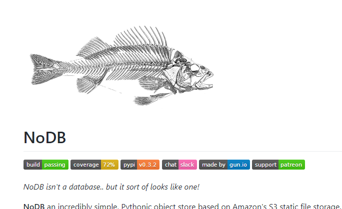
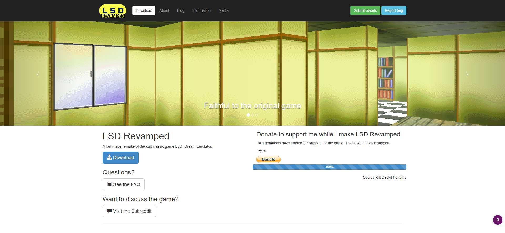
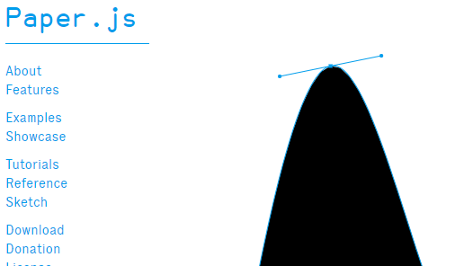
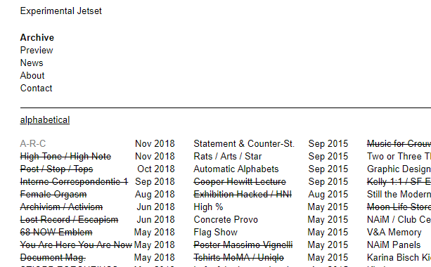

findings - week of 2.6.2019
The last few days were pretty busy for me. I ended up spending less time doing recreational research this week, and when I did, I ended up doing a ton of reading about the black iron prison. I was tempted to just write about that and consider it a 'finding' but I didn't. check it out if you want to. it's kind of interesting.
anyway,
number one: nodb.
according to the repository description on github, nodb isn't a database...but it sort of looks like one. it's a file storage utility written in python. this is interesting to me because something like this (a schema-less object-based data store) could be done in javascript within the context of a static website. what exactly is interesting about it is the methods used to store and retrieve information. I'll probably be referencing this project a lot during the next few weeks as I work on my own javascript storage engine and database management system.
number two: lsd revamped.
if you've ever played (or just heard of) the obscure playstation 1 title lsd: dream emulator, this one may be of interest to you. it's not actually something I found this week; I bookmarked this about 5 years ago and unfortunately forgot about it. the project, which started in 2011, seeks to port lsd to unity3d. as of today, it's still in alpha and the list of 3d models which the developer (figglewatts) needs is still incomplete.
by the way, osamu sato, the creator of the game, posted an art collection, also called "lsd revamped" on the 20th anniversary of lsd a few months ago.
number three: paperjs.
I was recently looking for some kind of way to create an interactive fluid animation in javascript for a website that I've been working on. and lo and behold, the demo on the front page of paperjs.org has the exact interaction I was looking for. however, the framework does way more than just that one thing. it is, of course, canvas based. it's main function is to allow developers to create vector graphics in a more intuitive way.
number four: experimental jetset.
experimental jetset is an independent graphic design studio based in the netherlands. I added it to my findings this week because they have quite a large archive of design projects, installations, lectures, and other things that they've created from 1996 to late 2018.
as I've pretty much always been inspired by the european schools of design, finding this website was like finding a gold mine.
most of the things I find are pretty old, as in they've been on the internet since long before I came and found them; so they're new, but only to me. hopefully one day I'll be better at finding things that are actually new. but until then
I'm just an archaeologist — and a pretty mediocre one at that. but at least writing these is fun! thanks for reading, I'll try to gather more stuff for next week.
currently listening to FUWATINITY by DJ Sharpnel and G.O.A.T. by Polyphia.